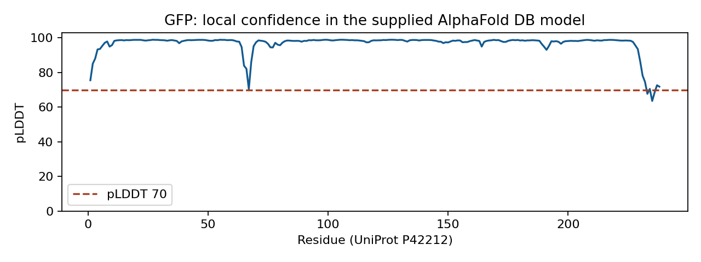
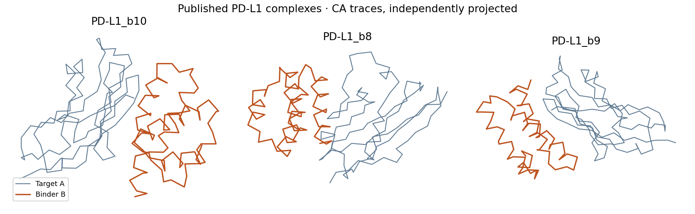

Analyze supplied examples
Continue learning without a GPU, hosted account, or model installation
Start with the GFP confidence task for structure prediction. Use the published binder task for design and capstone analysis. Both downloads contain real source structures, ready-to-read figures, editable worksheets, provenance, and checksums. All reading and worksheet tasks work offline after download.
GFP confidence
Time: 20 minutes for a first interpretation; 60–90 minutes for the full lesson evidence. Compute: none. A molecular viewer is optional for the first task.
- Unzip the download and open
plddt.pngandpae.png. - Identify one confident region and one uncertainty. Record residue numbers and the evidence behind your answer.
- Fill in
evidence-template.csvusing any spreadsheet or text editor; leave unavailable values as N/A, with a reason. - Write a three-sentence trust statement. Then compare it with
completed-example.md. - If you have PyMOL, load
gfp.pdband follow the AlphaFold2 analysis steps. The experimental comparison requires fetching 1GFL; if offline, explicitly record that comparison as not measured.

This unchanged AlphaFold DB GFP model (P42212), version 6, uses the same 238-residue sequence as the course lab. The download includes the database’s confidence and PAE files. It is not a new ColabFold run: pTM, runtime and original MSA depth are not supplied. Do not substitute an average PAE for pTM or report invented runtime. Source data: Google DeepMind / EMBL-EBI, CC BY 4.0; retrieved September 19, 2026.
Your evidence: completed confidence table and trust statement, with provenance. This satisfies the analysis alternative for the AlphaFold2 lesson. Mark that lesson’s evidence checkpoint after saving your work.
Published binder evidence
Download PD-L1 binder analysis dataset
Time: 20 minutes for an initial comparison; use the seven-stage workbook for the capstone. Compute: none. PyMOL is optional for the initial gallery and table comparison.
- Open
candidate-gallery.pngandcandidate-comparison.csvto compare three published PD-L1 complex models. - State a selection rule before choosing a candidate. Compare CA-contact counts at 6, 8 and 10 Å, and account for binder length. These are geometry proxies, not binding-affinity scores.
- Inspect
binder-sequences.fastaand document sequence differences. The target is chain A and binder is chain B; numbers are local to these files. - Complete
analysis-workbook.md: target brief, provenance audit, backbone comparison, sequence evidence, validation limits, sensitivity analysis, and a conditional selection memo. - Assess your portfolio with the analysis-mode rubric.

The unchanged models come from Pacesa, Nickel and Correia’s BindCraft structural-model archive, version 1, under CC BY 4.0. The course derives the gallery, chain-B sequences and CA-contact table from those models. provenance.json identifies the original archive and SHA256SUMS.txt records the bundled files. The repository’s scripts/build-analysis-data.py reproduces the derived summaries without model inference.
The source archive does not supply raw trajectories, rejected candidates, original seeds/configuration, parent-backbone links, PAE or ipTM. Record those as unavailable and explain which conclusions they prevent. Do not claim a reproduced generation run, validated affinity, or experimentally successful binder. Do not copy native PD-L1 hotspot numbering into these cropped structures without a sequence mapping.
For the analysis capstone, missing upstream files become an evidence-gap audit with a concrete next test. You still inspect all three supplied models, compare at least two finalists, test a misleading ranking assumption, and write a conditional decision. This alternative does not require inventing provenance or running a new model.